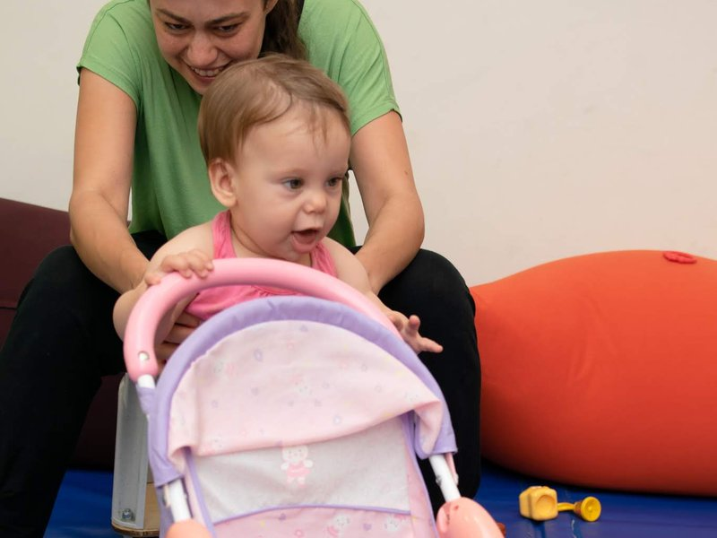

ידע קטן, הבדל גדול
רעיונות פשוטים שאפשר לשלב בשגרת היום. הם לא מחליפים ייעוץ אישי, ואם משהו מטריד אתכם, אשמח שתתייעצו איתי.
איך להפיק את המיטב מהטיפול?
היו שותפים
גם אם אתם לא בחדר כל הזמן, שוחחו עם המטפלת, ספרו מה קורה בבית ושאלו איך להמשיך את התרגול.
להישאר בחדר?
ברוב המקרים כן! כך תראו את הטכניקות ותוכלו ליישם אותן בבית, והילד ירגיש שאתם שותפים להצלחות שלו.
לדבר במודעות
ילדים שומעים וסופגים הרבה, גם כשנראה שלא. על חלק מהדברים עדיף לדבר כשהילד לא נוכח.
לחגוג הצלחות קטנות
היו סבלניים ועקביים, ותנו לילד ולעצמכם קרדיט על כל צעד קטן בדרך.
איך לעודד שכיבה על הבטן?
שכיבה על הבטן היא אחת התנוחות החשובות ביותר להתפתחות התינוק. דרכה הוא מתחזק כדי לרכוש את אבני הדרך הבאות: קשר עין ומעקב, הרמת ראש, זחילה, הליכה ואפילו אכילה. משרד הבריאות ממליץ לשכב על הגב בזמן השינה, ובערות לאפשר מגוון תנוחות, ובמיוחד שכיבה על הבטן.
- מתחילים קצר: כמה פעמים ביום, לפרקי זמן קצרים. הזמן יתארך מעצמו ככל שהתינוק יתחזק.
- על הירכיים שלכם: שבו על הספה והניחו את התינוק על הבטן על גבי הירכיים, קרוב אליכם.
- על החזה: נשענים לאחור, והתינוק מנסה להרים את הראש כדי לראות אתכם.
- בגובה העיניים: רדו למזרן, דברו, שירו והראו לו צעצועים. אתם המוטיבציה הכי טובה.
- להבחין בין קיטור לבכי: לפעמים התינוק רק משתף אותנו שקשה לו. נסו להרגיע ולהמשיך עוד רגע.


הנדלינג: לא משנה רק מה עושים, אלא איך
בחודשים הראשונים התינוק נמצא הרבה על הידיים: מחתלים, מרימים, מאכילים ומרגיעים. האופן שבו אנחנו מחזיקים ומזיזים אותו נקרא בשפה המקצועית "הנדלינג", והוא יכול לעזור לו להתחזק.
דוגמה: כשמרימים את התינוק, כמה אתם תומכים בראשו? תינוק צעיר זקוק לתמיכה מלאה, אבל לפעמים ממשיכים לתמוך גם כשכבר אין צורך, והתינוק מפספס הזדמנות לחזק את שליטת הראש. שינוי קטן בהרגל יכול לתת לו הרבה מאוד תרגול לאורך היום.
הנדלינג טוב מותאם לקצב ולעוצמה של התינוק: הוא נותן לו ביטחון ומאפשר לו להשתתף.
לקראת זחילה
סביב גיל 5–6 חודשים כדאי לחשוף את התינוק גם לתנוחות על הברכיים.
לא צריך ג׳ימבורי: ערימת כריות, חבילת טיטולים או קופסה עם צעצוע מעליה מזמינות אותו למשוך את עצמו ולטפס. הסביבה הביתית יכולה להיות סביבה התפתחותית מצוינת.


אחרי הצעדים הראשונים
בהדרגה הילד ילך יותר וייפול פחות, ילמד לעצור, להתכופף ולחזור לעמידה, וילך גם על משטחים כמו חול ודשא.
אם הליכה עצמאית לא הופיעה עד סביבות שנה וחצי, או שהיא נשארת לא יציבה כמה חודשים, מומלץ להתייעץ עם פיזיותרפיסטית התפתחותית.
גמילה, עצירות והרטבה
גמילה ושליטה על סוגרים מעסיקות הורים רבים. הנה כמה דברים שכדאי לדעת:
מתי להתחיל להתכונן לגמילה?
סימנים למוכנות: הילד מודיע כשעשה פיפי או קקי, מביע רצונות בבירור, מגלה עניין בשירותים, יושב לבד על סיר ועוזר בהתלבשות. בשלב טרום הגמילה אפשר לקרוא ספרים על הנושא, לשחק משחקי דמיון עם בובה ולהושיב אותו על הסיר כשהוא רוצה.
מה הקשר בין עצירות להרטבה?
עצירות היא אחת הסיבות השכיחות לקשיים בשליטה על סוגרים, ולפעמים צריך לטפל בה קודם. גם ארוחת בוקר מהירה ויציאה לגן בלי זמן לשבת בשירותים משפיעות. שגרה קבועה של ישיבה בשירותים אחרי הארוחות יכולה לעזור מאוד.
איך יושבים נכון בשירותים?
כפות הרגליים צריכות להיות נתמכות על שרפרף, כך שהברכיים מעט גבוהות מהירכיים. בתנוחה הזו שרירי רצפת האגן משתחררים, וקל יותר להתרוקן עד הסוף.


יציבה וקואורדינציה בגיל הגן ובית הספר
יציבה טובה וקואורדינציה נבנות מתנועה, לא מישיבה זקופה לאורך זמן. ילדים שמתקשים בקואורדינציה נוטים לעיתים להימנע מפעילות, ודווקא אצלם חשוב במיוחד לעודד תנועה מגוונת. כמה דברים פשוטים שאפשר לשלב ביומיום:
- ישיבה נתמכת: כפות הרגליים על הרצפה או על שרפרף, והשולחן בערך בגובה המרפקים.
- הפסקות תנועה: כל 20–30 דקות של ישיבה כדאי לקום, לזוז ולהתמתח.
- 60 דקות ביום: ההמלצה לילדים היא לפחות שעה של פעילות גופנית בכל יום, למשל ריצה, רכיבה על אופניים, משחקי כדור, שחייה או משחק בחצר.
- משחקי קואורדינציה: קפיצה על רגל אחת, הליכה על קו או על אבני שפה, זריקה ותפיסה של כדור ומסלולי מכשולים בבית.
- משחק פעיל: טיפוס, תלייה, זחילה והליכות "חיות" מחזקים את שרירי הגו והכתפיים.
- תיק בית הספר: לסדר את הספרים והחפצים הכבדים בתא הקרוב לגב, ולהוציא כל יום את מה שלא צריך, כדי שהתיק לא יהיה כבד מדי. התיק צריך להיות על שתי הכתפיים, עם רצועות מהודקות כך שהוא צמוד לגב: החלק העליון בגובה הכתפיים, והתחתית לא נמוכה מהמותניים. בתיק עם ידית וגלגלים כדאי לכוון את הידית לגובה שבו הזרוע רפויה, ולהחליף ידיים במהלך הדרך.
תרגול ושגרה בבית
המטרה היא שהילד ישתתף כמה שיותר בחיי היומיום, והתרגול ישתלב בשגרה ולא יתווסף אליה כמשימה.
- תרגול בתוך השגרה: עמידה בזמן צחצוח שיניים, הליכה לארוחה, ישיבה מותאמת בזמן משחק.
- לתת לעשות לבד: גם כשזה לוקח יותר זמן, כדאי לאפשר לילד לנסות בעצמו ולעזור רק כשצריך.
- סדים וציוד: להקפיד על זמני השימוש שנקבעו, לבדוק מדי פעם שהאביזר עדיין מכוון למידות הילד, ולשתף את המטפלים בקשיים שעולים ובצרכים חדשים שמתעוררים.
- התאמת הסביבה: כיסא יציב, ידיות אחיזה וסידור הבית כך שהילד יוכל להגיע לבד לחפצים שלו.
- קשר עם הצוות: עבודה רב-צוותית, שבה הגן ושאר המטפלים מכירים את המטרות והתרגילים ופועלים באותו כיוון, תורמת מאוד להתקדמות הילד. היא לא תמיד פשוטה ליישום מבחינה מעשית, בייחוד אצל ילדים המשולבים במסגרות חינוך רגילות, אבל הערך המוסף שלה גדול מאוד.